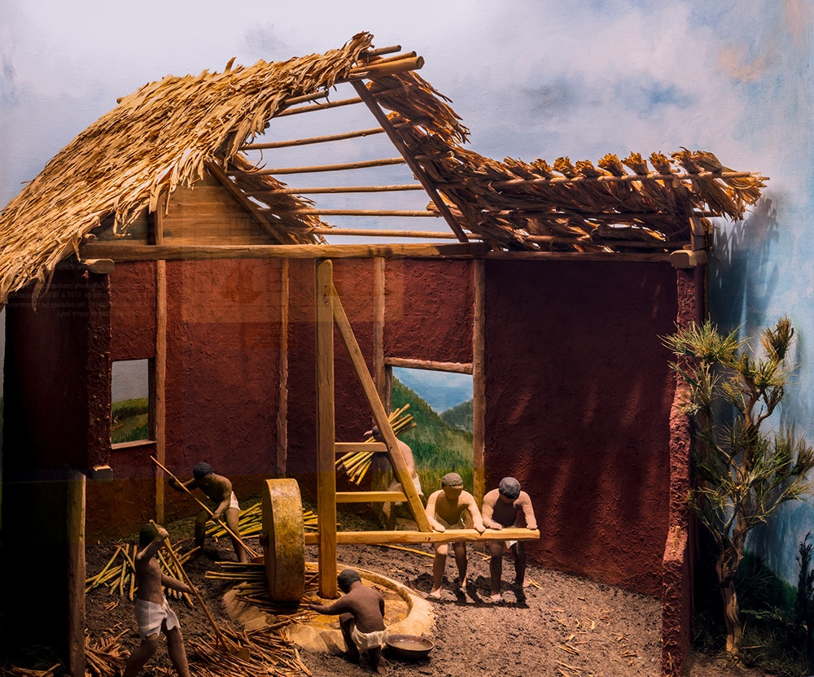

Le Musée Stella Matutina, installé dans l'ancienne usine sucrière du même nom, a ouvert ses portes en 1991. Pendant 20 ans, les publics,
réunionnais ou touristes, y ont découvert les techniques industrielles de la fabrication du sucre de canne, ainsi que des informations sur
l'histoire de la Réunion et de sa population.
La Région Réunion à entreprise en 2001 un réhabilitation totale du Musée et du site. Par exemple le musée Stella est maintenant équiper d'un cinéma 4D
